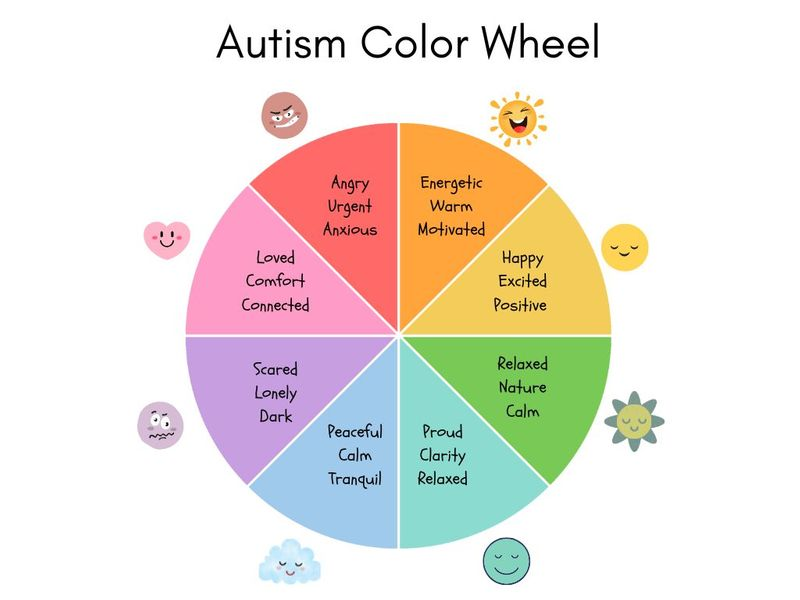

AUTISM SPECTRUM
Autism is neither an illness nor a deficit; it is an alternate neurological architecture of experiencing reality—where sensory signals, hyperfocus, and internal emotion are registered with extraordinary intensity and unfiltered fidelity.
Marcus & The Fluorescent Symphony
To 26-year-old software architect Marcus, walking into a typical grocery store or open-plan office isn't just an errand—it is an immersion into an unbuffered sensory storm. While neurotypical brains possess automated neurological filters that mute the 60Hz hum of fluorescent bulbs, the squeak of sneakers on linoleum, and the perfume of ten passersby, Marcus’s nervous system receives every input at maximum volume simultaneously.
When Marcus experiences what outsiders call a "meltdown" or "shutdown," it is not a temper tantrum; it is a neurological circuit breaker tripping to protect his brain from catastrophic sensory overload. When given a quiet space, clear communication without ambiguous subtext, and the freedom to stim (rhythmic rocking or finger-tapping), Marcus unlocks astounding abilities: identifying subtle algorithmic anomalies in seconds that take teams days to trace.
Sensory Overload Perception Chamber
Adjust the sensory inflow sliders below to experience how ambient environmental noise and visual clutter compound to distort cognitive clarity for an autistic nervous system.

The Emotional & Sensory Color Spectrum
Autism is not a linear gradient from "mild" to "severe." It is a multidimensional color wheel where individuals navigate distinct emotional and sensory zones.
From the Peaceful & Calm Tranquil (Sky Blue) state to the high-alert Urgent & Anxious (Coral Red), an autistic person’s needs shift depending on sensory safety, communication accommodation, and emotional validation.
KEY INSIGHT: Meltdowns occur when an individual is trapped in high-alert states without an escape valve or compassionate companion.
"When the world feels ten times louder, brighter, and faster than you can bear, what would you need from the person standing beside you?"
Pause for a breath. Shift your perspective from observer to human heart. How would you want the world to respond to your vulnerability?
EMPATHY PLEDGE EMBEDDED
"I choose to offer quiet stillness and eliminate judgment when someone near me is overwhelmed."